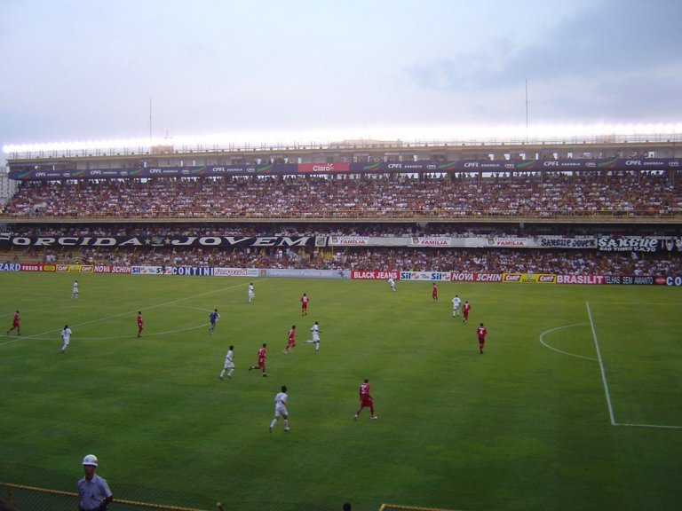
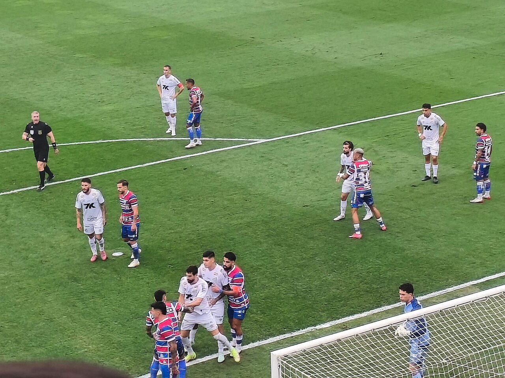
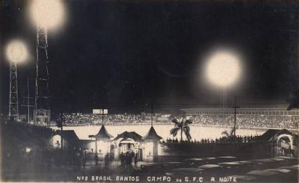

1. Tradição
Um estádio histórico que recebeu grandes jogos e grandes craques.
Conheça um dos estádios mais tradicionais do futebol brasileiro.

Um estádio histórico que recebeu grandes jogos e grandes craques.

A proximidade das arquibancadas cria uma atmosfera única nas partidas.

Desde o século passado, a Vila faz parte da história da cidade de Santos.